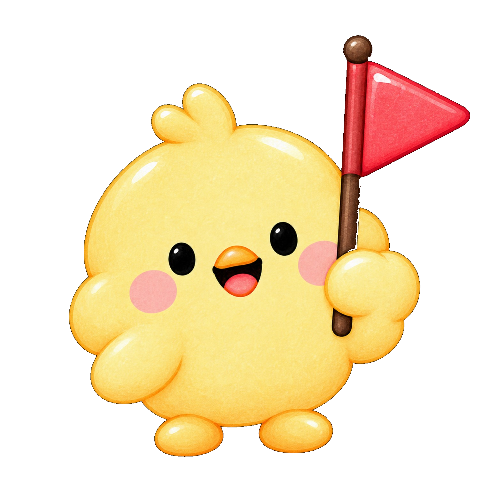

👆→→🧺
2 × 2

0 / 2
🍎 👆 → 🧺
2 × 2 = ?
?
👀 🍎 → 🔢
2 × 2 = 4
🍎→🧺→🌼
보호자·선생님 안내
이 게임은 사과를 실제로 담아 보는 구체적 경험과 같은 개수의 묶음을 세는 경험을 연결하도록 구성했습니다. 첫 단계는 2개씩 2명이며, 3개씩 2명, 4개씩 3명, 12개씩 3명, 31개씩 3명, 31개씩 9명, 42개씩 3명 순으로 진행합니다. 처음엔 큰 사과 버튼만 누르면 자동으로 다음 친구의 바구니로 이동합니다. 10개 묶음을 사용하는 단계부터는 사과 열 개가 그려진 묶음 버튼이 추가됩니다.
오답이 나와도 정답을 미리 알려주지 않으며 다시 생각하게 합니다. 숫자 읽기·일대일 대응·묶음 세기에 어려움이 있는 아동은 보호자와 함께 선택한 더 쉬운 단계에서 반복할 수 있습니다. 어린 아동이 독립적으로 곱셈을 습득하는 효과는 확인되지 않았습니다. 브라우저의 한국어 음성 합성 지원 여부에 따라 🔊 안내가 작동하지 않을 수 있습니다.
3학년 2학기 곱셈 단원으로 돌아가기